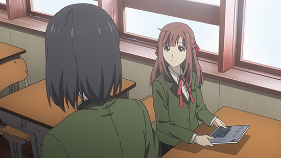

「Lostorage incited WIXOSS」
Column of episode 01
Episode 1 Aired!
Today (10/14) episode 2 will be airing.
What did you all think of the first episode? I'm sure some of you watched it in real time on your phones through SMP, unlike two years ago, which just goes to show how quickly times are changing.
Now then, the biggest differences in this Selector series are:
1) A wide range of ages
2) With adults, children, and teens
3) The LRIG of the Beginning that draws everyone into the battle is the same for all
Do many of you think that the conditions are quite unreasonable this time? I personally believe that fate works in mysterious ways.
As usual, I'm sure many of you have no idea what's going on in the anime, so we'll use this column to supplement it.
For those of you who haven't seen episode 1 yet, consider yourself warned that there will be some spoilers.
Hello, Ikebukuro
Suzuko returns as a high school student.
She experiences firsthand the coldness of city girls.
Not to mention that she can't see her emotional support, Chinatsu-san.
 City folk sure are harsh
But, that's just the time for Wixoss!!
All you need is Wixoss to make new friends (at an increased probability)!
The card shop has a friendly atmosphere. You should all give it a visit too.
Congratulations, you've been selected!
Out of everyone that starts to play Wixoss, some of them are chosen.
Those people are called "Selectors". (This includes those who chose their own path)
This time, those who are chosen are able to bet every single one of their memories in battle.
Give them a name and your entry is complete! The LRIG of the Beginning then changes into your LRIG.
This time, some of the cards look like the image below, with the "LRIG of the Beginning" printed on the back.
You can use it like a normal LRIG.
Get 5 coins and clear the game!
The amount you start with is random. It sure feels mean that they don't Open the rest of the cards for you.
First battle: Ril vs Guzuko
Sorry that I'm only a beginner, but would you mind battling me...?
Don't worry about being a beginner, just ask without worrying. I'm sure they'll be kind and teach you the rules.
Now then, this first battle begins with:
Red Ril: 1 Coin
Black Guzuko: 4 Coins
Now then, below is the starting board state. (At the end of the turn)
Suzuko is using a Valor deck with "Rise" abilities, and Sumita (or Sumida) uses a Black/Green mix with Playground Equipment. It feels like he's going for a sort of "Hit them with a series of punches and get 'em while they're down" deck.
By the way, trolling your opponent is poor manners.
She actually ended her turn!!
If they're a beginner, it would only be polite to allow them to start over from their draw.
Sumita summoned Gachapo and Beanbag to attack the empty lanes.
Now it's Suzuko's turn, who's still following Ril's advice. She starts to fill up the field. Then she summons Valor Gawain!
You can tell she sets up her attack like a beginner. She doesn't consider collecting Ener or anything else like that.
But that's exactly why you can see she might actually be a natural at the game.
Sumita summons Beanbag in a hurry!
After this, Suzuko attacks with a Servant, but it's actually one turn later (on Suzuko's 3rd turn)

It wasn't shown, but she actually banished a Beanbag with Mighty Flash here.
She's a fast learner.
And the battle continues.
The battle tables that were used for the Selector battles are in ruins.
The tables we used for our events are in ruins too. All things must pass, as they say. {TL Note: Sick YuYuYu reference}
I'm sooorryyyy
Ril...!
She was blown away by Guzuko whose body is honest. Ril is Level 4.
The second half of the 4th turn, Sumita
Sumita-san puts Yo-Yo on the field, and uses its Down effect to lower Goku's power to 5000. {TL Note: There might be an error here, Goku has 12000 Power and Yoyo's ability is to lower it by 10000}
In addition, he summons Nihoningyo, removes Yo-Yo and summons See-Saw.
During the Attack Phase he uses Nihoningyo's ability to lower Percival's Power by 4000 and then uses its banish effect to summon
効果でSaramawa (Platespin), banishes Goku, and draws a card due to See-Saw's effect all at once.
Plus, he has an Arts with an iron defense.
Currently confirming the effects via the Wixossdex {TL Note: Real app, you can download it}
And then, she uses a Coin Bet!
The ability Ril uses is..."Honest!"
Amazingly, Ril begins to glow the instant she uses it, and Sumita immediately becomes honest!!
It was a huge lie about that defensive Arts!!
It ends with a Flameless Isolation to banish all his Signi, followed by an all-out attack. Sumita-san has no Life Bursts activated and loses.
About Coin Abilities
Coin Bet! Honest!
Now then, at the crux of this battle were the so-called "Coin Abilities" used by betting a coin.
Ril has Honest, Mel has Berserk, Aaya has Holograph, and Nanashi has Blind.
Each of the coin abilities affects the field or otherwise in some way.
In these Selector battles you lose one coin if you are defeated, but in addition to that there's also a rule where "you lose the coins you bet if you are defeated in battle".
If you win, the coin[s] are not used up.
Please understand that due to these differences, there may be a difference in how you evaluate when or when not to use coins between the anime and real life.
Sumita-san must have been avoiding using his coins because if he were to bet one and lose, then he'd be blown far away from his riichi {TL Note: For you non-mahjong folks, that means one away from winning}. What a sad person to fear losing in such a way. I can't help but wonder what his coin ability is...
By the way, the ability that Yamaguchi toyed with once called Leaking: "Make your opponent need to use the bathroom" has been safely put aside, so please don't worry about it.
The spinoff manga where Honest is used that is published by Ultra Jump will be released on 10/19. Please enjoy it too!
Next, that person will finally battle in episode 2?! Look forward to it!